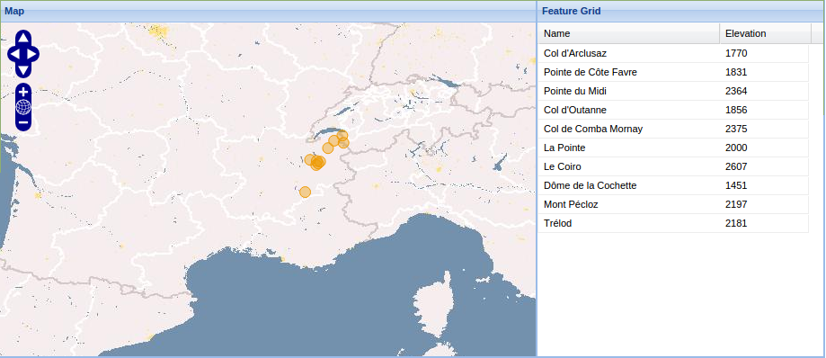
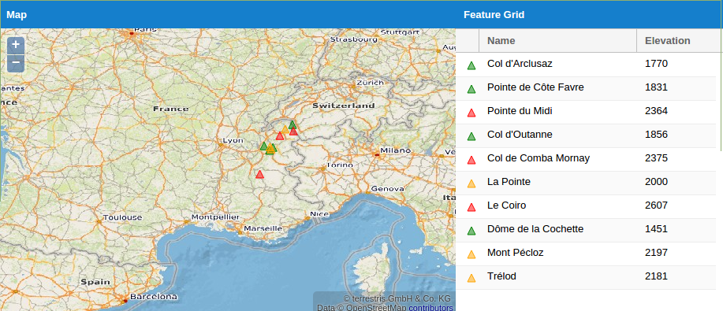
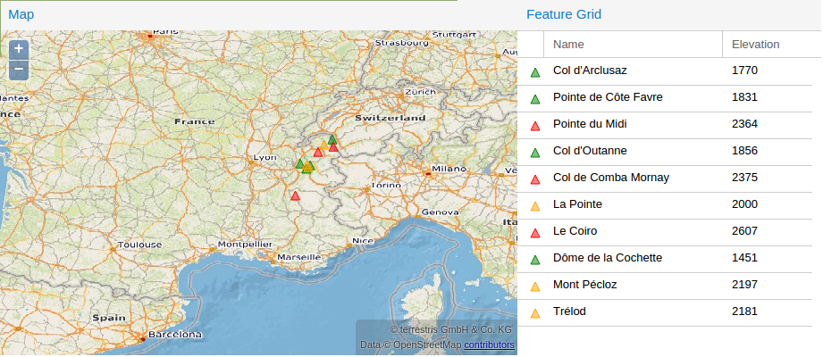
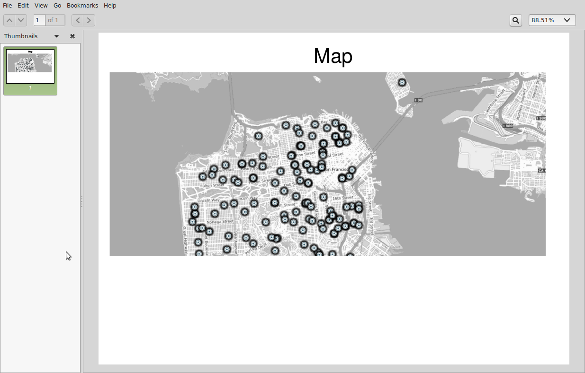

GeoExt 3
OpenLayers 3 und ExtJS 6 im Zusammenspiel
Christian Mayer
INTERGEO 2015 (OSGeo-Park), Stuttgart, 16.09.2015
Agenda
- Einführung & Vorstellung
- Die Geschichte von GeoExt
- Was genau ist GeoExt 3?
- Ziele
- Status / aktueller Stand
- Beispiele & Features
- Ausblick
Einführung & Vorstellung
Christian Mayer

- Softwareentwickler & -architekt
- Selbstständiger GIS-Dienstleister (meggsimum)
- Kernentwickler & Mitglied des PSC GeoExt
- OSGeo Foundation Charter Member
- Sprecher auf nat. & intern. Konferenzen
- ♥ OpenSource & GIS / Spatial
meggsimum
- meggsimum.de
- Dienstleistung im Bereich GIS / Webmapping /GDI
- Dannstadt-Schauernheim
- Moderne Webmapping-Lösungen
- Softwarekonzepte und Softwareentwicklung
- Consulting und Schulungen
GeoExt
- JavaScript Framework für anspruchsvolle WebGIS-Anwendungen
- Basiert auf OpenLayers and ExtJS
- Erweitert ExtJS um räumliche Komponenten
- Integriert Geo-Formate in die Datenhaltung von ExtJS
- ==> "Rich Webmapping Applications"
- © OSGeo, OpenSource
- Erster Commit 25.03.2009
GeoExt…
…ist die Verheiratung von ExtJS and OpenLayers
…ist das Kind von ExtJS and OpenLayers
…erweitert/verbessert beide, ExtJS and OpenLayers
Die Geschichte von GeoExt
GeoExt 1.x
- Basiert auf ExtJS 3.x & OpenLayers 2.x
- geoext.org 


GeoExt 2.0.x
- Basiert auf ExtJS 4.x & OpenLayers 2.x
- geoext.github.io/geoext2 
GeoExt 2.0.x
- Größte Veränderungen / Verbesserungen
- Einführung einer neuen Erzeugungssyntax
- MVC-Support
- Einfacheres Styling der Anwendungen
- Verbesserte API-Dokumentation
- Kompatibilität zu den Build-Tools von (Dependency- Management, …)
GeoExt 2.1.x (beta)
- Basiert auf ExtJS 4.2.x / ExtJS 5.1.x OpenLayers 2.x
- geoext.github.io/geoext2 
GeoExt 2.1.x
- Größte Veränderungen / Verbesserungen
- Unterstützung von 2 Major-Versionen von ExtJS
- MVVM-Support
- Two-Way-Binding
- Verbesserte Unterstützung von Mobil- und Touch-Geräten
- Responsive Design
In der Zwischenzeit…
OpenLayers 3
&
ExtJS 6
…erblickten das Licht der Welt
GeoExt 3 Codesprint
- 17.06. - 19.06.2015 in Bonn
- 10 Entwickler aus 4 Ländern
- Fundament geschaffen für GeoExt 3 auf Basis
- OpenLayers 3
- ExtJS 6
Sponsoren
- Bistum Eichstätt
- Boundless
- Bundesamt für Strahlenschutz
- Compass Informatics Ltd
- ISB AG
- Landesamt für Geoinformation und Landentwicklung Baden Württemberg
- Landplan AG
- meggsimum
- terrestris GmbH & Co. KG
Was genau ist GeoExt3?
Ziele
- Schaffen einer neuen Codebasis ("from Scratch")
- Provitieren durch Sencha Tooling (Build / Paketierung)
- Unabhängigkeit vom Zielgerät (Desktop / Mobile)
- Mehr und modernisierte Beispiele, verbesserte Tests und Dokumentation
Status / aktueller Stand
- github.com/geoext/geoext3 ✔
- > 300 Commits✔
- 7 Beitragende✔
- Build and Paketierung ✔
- 82% Test-Abdeckung ✔
- Gute API-docs ✔
- Einige Beispiele ✔
- BSD ==> GPLv3✔
- Universal App Beispiel ✗
- 0 Releases ✗
Beispiele & Features
var olMap = new ol.Map({
layers: [
// …
],
view: new ol.View({
// …
})
});
var mapComponent = Ext.create('GeoExt.component.Map', {
map: olMap
});Ergebnis-PDF des Druck-Beispiels
Ausblick
Ausblick / zukünftig
- Veröffentlichung von Beta- / Preview-Versionen
- Roadmap für die weitere Entwicklung
- Mehr Leute begeistern
- Universal Application
- Mögliche Untergliederung: GeoExt-base, -modern, -classic
- Kontinuierliche Weiterentwicklung
- … anschließend Veröffentlichung als 3.0.0
Danke!
Fragen & Anmerkungen?
Impressum
Autor
Christian Mayer
meggsimum
Hauptstraße 165a | 67125 Dannstadt-Schauernheim
chris@meggsimum.de
meggsimum
Hauptstraße 165a | 67125 Dannstadt-Schauernheim
chris@meggsimum.de
Credits
Diese Folien basieren auf dem Vortrag Towards GeoExt 3 ‐ Supporting both OpenLayers 3 and ExtJS 6 von M. Jansen & C. Mayer
Lizenz
Diese Folien sind veröffentlicht unter CC BY-SA